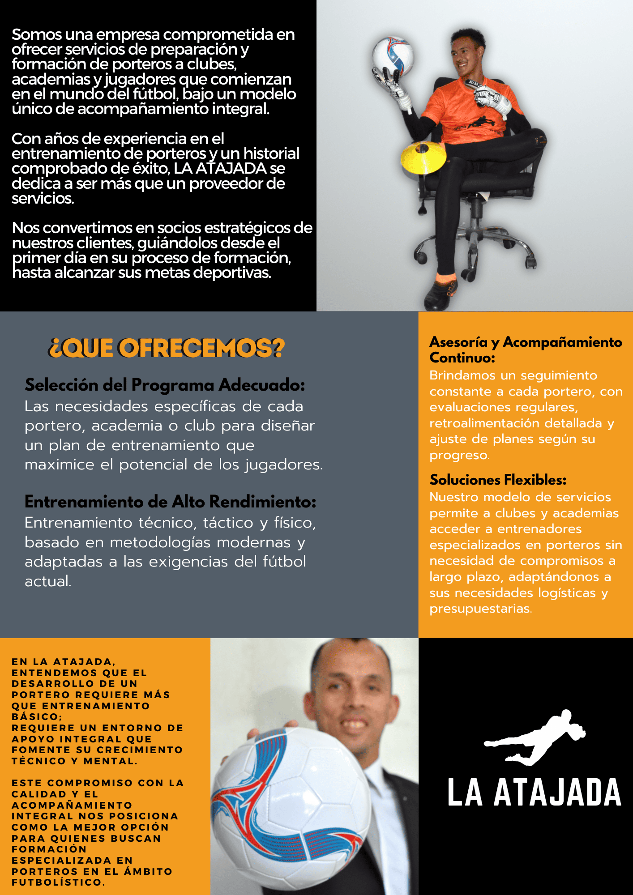

¿Quienes Somos?

Juan José Caniz
Director General
Co-fundador de La Atajada siendo entrenador de futbol Licencia A. Avalada por Concacaf y FIFA, Juan José Caniz tiene más de 10 años de experiencia preparando porteros en 3ª, 2ª y 1ª División de Guatemala, logrando ascensos a Liga Nacional y destacando con porteros menos vencidos.
Gracias a su experiencia, ha creado su propia metodología de entrenamiento, adaptada a las necesidades de cada portero, garantizando su progreso. Reconocido por su profesionalismo y ética, Juan José combina exigencia con un carácter cercano y siempre busca la mejora continua.
Horacio Caniz
Director Administrativo
Co-fundador de La Atajada siendo futbolista profesional en activo y desarrollador de software, Horacio es el responsable de las estrategias de crecimiento, negociación con clientes y manejo financiero de La Atajada. Muchas de las ideas clave que impulsan la empresa provienen de su visión clara y precisa, resultado de su experiencia tanto en el fútbol como en el ámbito empresarial.
Su enfoque se centra en mejorar constantemente el servicio, capacitando al personal para garantizar un funcionamiento óptimo. Con un entendimiento profundo de las necesidades de los clientes y usuarios finales, Horacio combina ética laboral, empatía y compromiso para asegurar el crecimiento sostenible de la empresa.

¿Interesado en Nuestros Servicios?
Contáctanos hoy para obtener más información o para programar una sesión de prueba.
Contáctanos